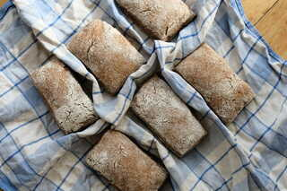

Reine Roggenbrötchen
Sonntags gibt es bei uns immer selbst gebackene Brötchen. Wir mögen gerne Brezeln oder Bagel, aber auch einfachere Brötchen wie diese Roggenbrötchen kommen bei uns häufig auf dem Tisch. Zu diesen Brötchen passen Nussmus und Marmelade ausgezeichnet, aber auch herzhafte Beläge wie Hummus oder Bohnendip passen sehr gut.
Das Rezept besteht aus 100% Roggenvollkornmehl. Wer dieses nicht zur Hand hat oder lieber etwas lockerere Brötchen haben möchte, kann auch Roggenmehl Type 1150 verwenden. Alternativ kann das Roggenvollkornmehl auch gesiebt werden, um ein Auszugsmehl zu erhalten. Die ausgesiebte Kleie kann dann zum Formen der Brötchen verwendet werden.
Sauerteig
- 25 g Anstellgut, aktiv
- 175 g Roggenvollkornmehl
- 175 g Wasser
- 2 g Salz
Hauptteig
- Sauerteig
- 315 g Roggenvollkornmehl
- 8 g Salz
- 230 g Wasser
Damit die Brötchen morgens gebacken werden, den Sauerteig entweder am Abend davor ansetzen, und die warme Stückgare wählen (dafür muss man aber sehr früh aufstehen) oder den Sauerteig am Morgen davor ansetzen und die kalte, lange Stückgare wählen.
Tipp: Für etwas lockerere Brötchen ca 600 g Roggenvollkornmehl durch ein feines Sieb sieben. Das Mehl (unbedingt abwiegen!) für den Brötchenteig verwenden und die Kleie in diesem Schritt zum Bemehlen der Arbeitsfläche und des Teiges verwenden. So kann das gesamte Korn verwendet werden; die Brötchen werden aber gleichzeitig etwas lockerer.
Alle Zutaten für den Sauerteig vermischen und 12 Stunden gehen lassen.
Alle Zuaten für den Hauptteig mit einem stabilen Löffel zu einem zähen Teig vermischen und bei Raumtemperatur etwa 2-3 Stunden gehen lassen, bis sich das Volumen etwa verdoppelt hat.
Den Teig vorsichtig auf eine bemehlte Arbeitsfläche geben. Mit Mehl oder Kleie bestreuen und vorsichtig zu einer 2 cm dicken Platte ausbreiten und zu einem Rechteck formen.
Nun die Platte in 10 gleichgroße Rechtecke einteilen.
Die Teiglinge nun auf ein Backblech setzen und abgedeckt entweder 2 Stunden bei Raumtemperatur oder 12 Stnden bei 6 Grad im Kühlschrank gehen lassen.
Am Ende der Gehzeit den Backofen auf 250 Grad aufheizen, bei Kühlschrankgare das Backblech währenddessen auf Raumtemperatur kommen lassen.
Das Backblech in den Ofen schieben und die Temperatur auf 220 Grad stellen und 15-20 Minuten backen.
Am besten komplett abkühlen lassen.